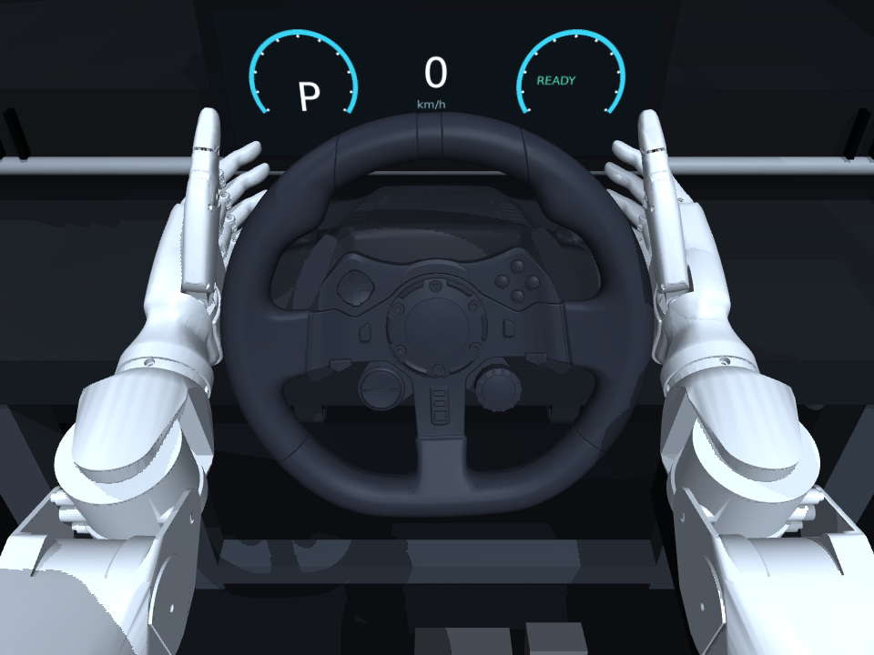
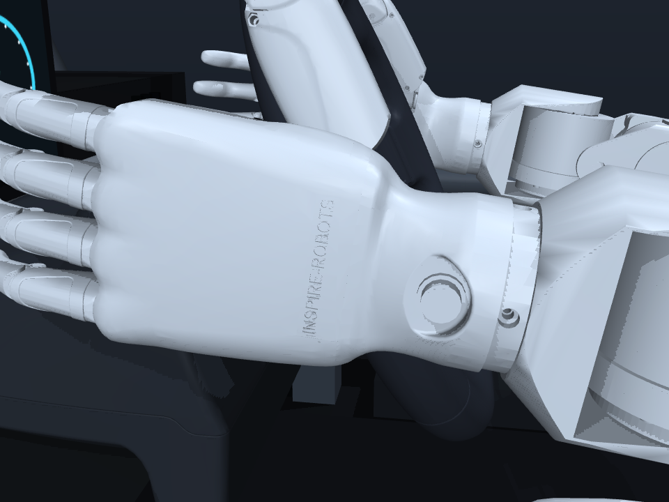
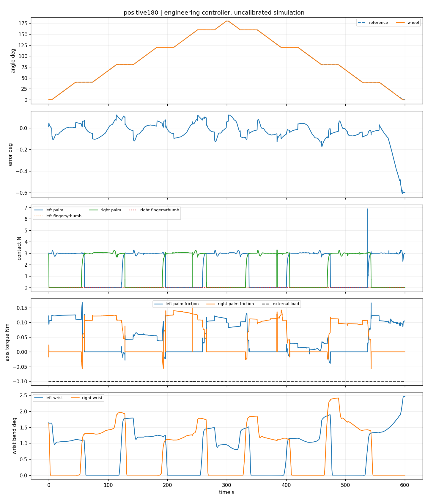
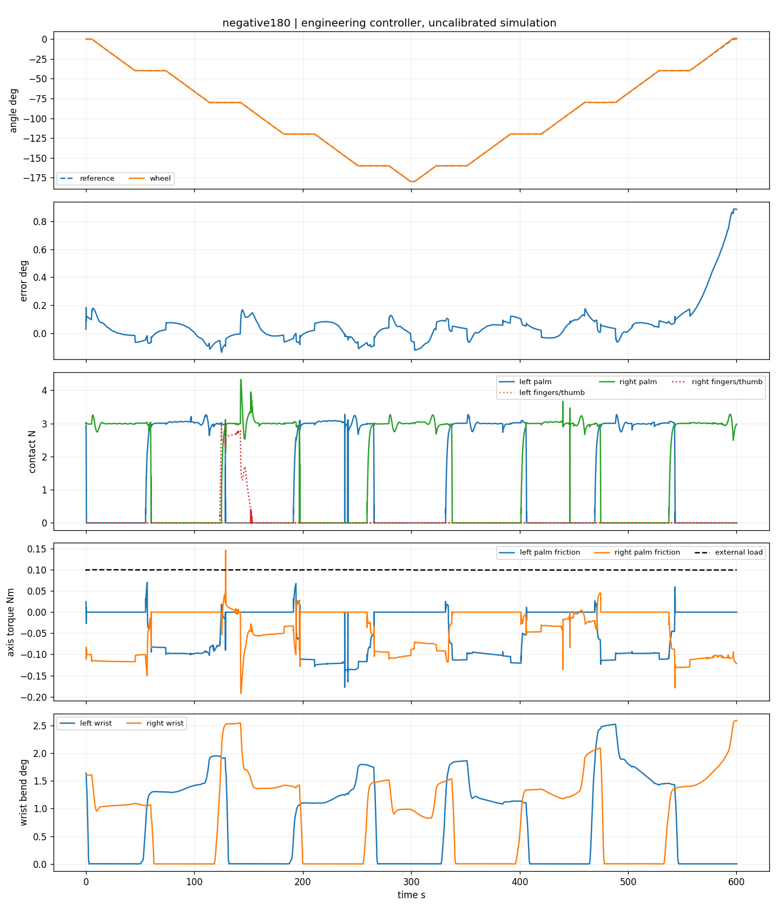
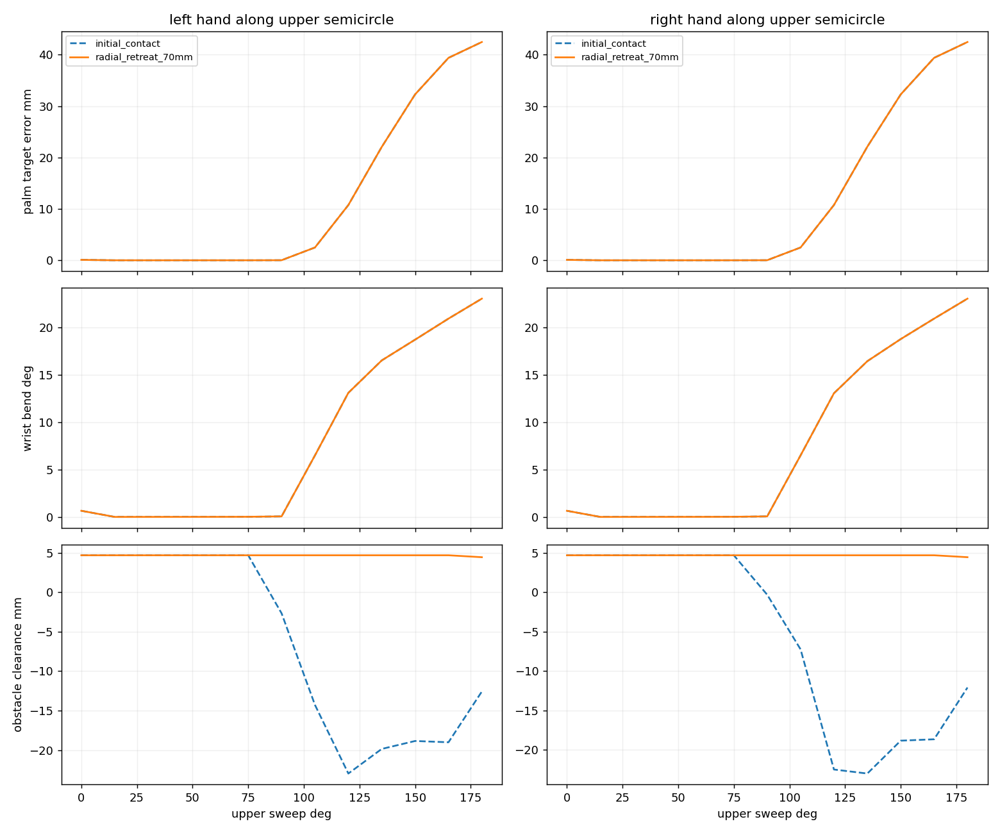

仿真完成 0 → +180° → 0 与 0 → −180° → 0。无学习的显式控制系统，保留真实接触、原限位、mimic及有限驱动。
名义速度 1°/s，合成负载 0.1 N·m。每条约600秒，8次接管，新手每次独立保持10秒。运动RMSE为0.117°／0.176°。视频是记录状态的完整4倍速回放，不剪辑；动作重新执行的物理核验另见报告。
验收报告 · 45例结果与失败 · 证据索引 · 系统组成与复现





当前为仿真物理可行性证据。使用仿真掌力与逐手力矩反馈，未验证实物、任意在线目标、高速或360°／540°；四指辅助收益未成立。大负载和高速失败均保留在报告中。